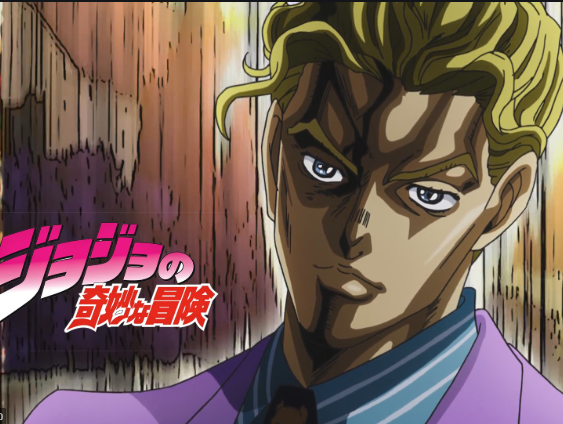

About me

My name is Kira Yoshikage. Age 33. My home is in the villa area in the northeastern part of Kao-cho. I'm not married. Work is a company employee of “Kameyu Chain Store” and returns home by 8:00 pm at the latest every day I don't smoke. Sake is just enough. At 11pm, I always sleep for 8 hours per floor. Drink warm milk before going to bed. When you loosen your body for about 20 minutes and then touch the floor. I almost sleep until morning. Like a baby, keep your eyes open in the morning without leaving fatigue and stress. It was said that there was no abnormality in the medical examination.
I am a mission-driven engineer has great passion and skill in modeling and simulation, and a lifelong technology lover passionate about developing great products as a mechanical engineer. I'm always ready for a challenge and love to learn new skills. Highlight profile: -Completed a 2-year Master of Engineering Science (Mechanical engineering) and a 4-year Bachelor of Engineering (Mechanical engineering) -Completed 1 bidding document and 3 Feasibility study reports (FSR) for government construction projects. -Gain advanced Solidworks, and ANSYS skills through projects in UNSW and DLUT. -Multitask ability and ability to work under high stress through 6-month kitchen hand experience. -Self-study programmer in Python and web development.